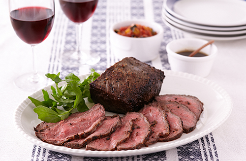

フライパンで簡単！ごちそうメニュー

焼き上がったらふたをして15分置くだけのおもてなしレシピ。大きなブロック肉を使用する場合でも300ｇに切り分けて作ることで、火の通りが絶妙になります！ラタトゥイユソースと柚子こしょうをきかせた和風ソースを添えれば、大人も子どもも嬉しい逸品に。
| 牛ももブロック肉（常温にする） | 600g |
| 塩 | 適量 |
| 粗挽き黒こしょう | 適量 |
| にんにく（すりおろし） | 2かけ分 |
| オリーブ油 | 小さじ2 |
| クレソン（つけ合わせ） | 適量 |
| なす（小） | 1/2個 |
| 玉ねぎ | 1/4個 |
| パプリカ | 1/4個 |
| ズッキーニ | 1/4本 |
| にんにく（みじん切り） | 1かけ分 |
| トマトの水煮缶（カットタイプ） | 200g |
| 洋風顆粒スープの素 | 小さじ1強 |
| 塩 | 小さじ1/4 |
| 粗挽き黒こしょう | 少々 |
| オリーブ油 | 小さじ2 |
| バター | 10g |
| ポン酢しょうゆ（市販品） | 大さじ4 |
| 柚子こしょう | 小さじ1/2 |
牛肉は300ｇずつに２つに切り分けておく。塩、粗挽き黒こしょう各適量を多めにふり、にんにくとともに肉にすり込む。

小さめのフライパン（または小鍋）にオリーブ油を弱めの中火で熱し、肉を並べ入れる。1つの面につき各1分30秒ずつ焼き、全体をこんがりと焼く。火を止めてコンロから外してふたをし、そのまま15分おく（牛肉を300ｇに切り分けられない場合は、火加減やおく時間は調整する）。

ラタトゥイユソースの野菜はそれぞれ1㎝角に切って耐熱の器に入れ、他の材料、調味料も全て加えて混ぜる。ラップをふんわりかけて電子レンジ（600W）で12分加熱する。味を見て足りないようなら塩、粗挽き黒こしょう（分量外）で味をととのえる。

和風ソースは、別の小さめのフライパンにバター、ポン酢しょうゆを入れて火にかけ、少し煮詰めたら柚子こしょうを加えて混ぜ、火を止める。 牛肉を食べやすく切って皿に盛り、クレソン、2種類のソースを添える。

ローストビーフをサンドイッチにするのもおいしい！ おすすめはクロワッサン。柔らかな食感がローストビーフとよく合います。クレソン、ラタトゥイユソースを一緒にはさんで。